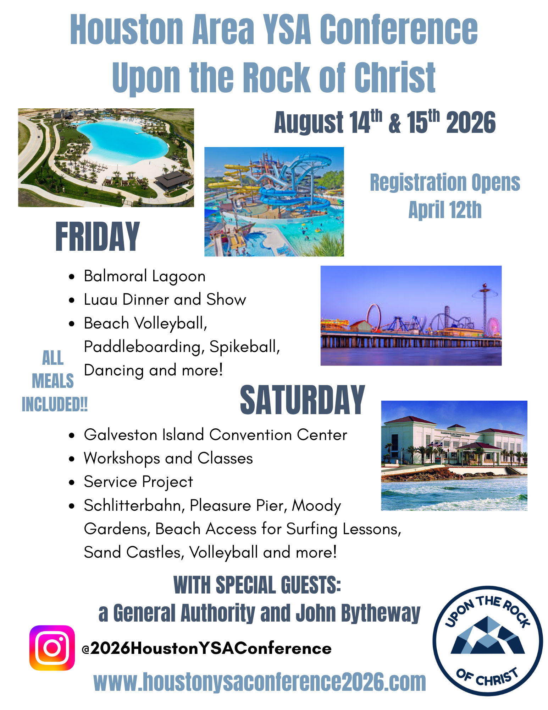
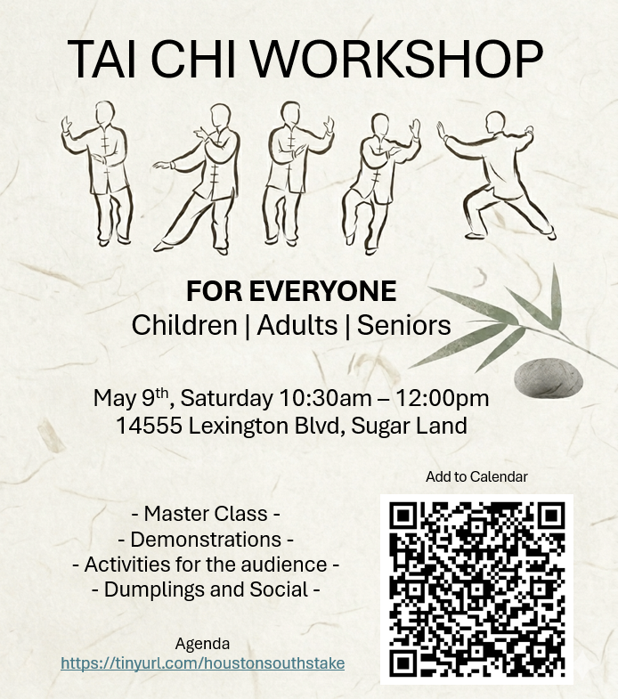

Sugar Land 2nd Ward
Sacrament Meeting
May 10th

Sacrament Meeting
May 10th
Presiding: Bishop Cody Roskelley
Conducting: Brother Jared Draney
#183, In Remembrance of Thy Suffering
Henrie Rellaford
Magnus Jones
Dale Jeffery
This is an amazing time to point people to the Savior Jesus Christ. When we do that, we can find joy and comfort and peace in Him. As President Nelson once said, it’s much harder to find happiness where it doesn’t exist. And we’re so grateful that I have this calling now to witness that Jesus is the Christ. If people all across the world will look to Him, He will make their lives better, more meaningful, more joyful. And it happens in and through our Savior Jesus Christ.
- Clark G. Gilbert
The sister missionaries have a new phone number: 346-901-8717
Volleyball Wednesdays - Come join us on Wednesdays at 9PM and have fun!!!
Send announcements to bvl2clerk@gmail.com





09 May 2026 Jones, T&M; Debow, D; Debow, D&R; Draney, J&M; Ekstrom / Ocampo
16 May 2026 Farley, M; Griffin, J&V, M; Hettinger, J&L; Horowitz, T; Jeffery, D&R
23 May 2026 Leavitt, B&C; Markwalter, V&W; Martin, C&G; Thibault, D; Moore, M&D
Check link section for how-to-videos
Deseret Industries Donations Pods at Lexington: The pod will be available for donations May 20-27.
Check the agenda for the Tai Chi Workshop on May 9
See the entire building cleaning schedule
See how to service soap dispensers
See how to refill paper towel dispensers
See how to replace toilet paper rolls
Get started with Temple and Family History work
Sign up to feed the missionaries